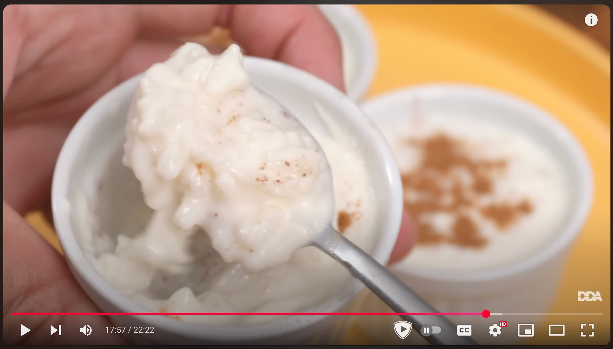

Ingredientes
- 1 litro de leche entera
- 100 g de arroz redondo
- 75 g de azúcar
- 1 rama de canela
- Una peladura de limón y una de naranja
- 40 g de mantequilla
- Canela en polvo (opcional para decorar)
Instrucciones
- En una olla, añade el arroz, la leche con la rama de canela y el limón y la naranja.
- Cocina a fuego lento, removiendo frecuentemente durante 45 minutos.
- Retiramos el limon, la naranja y la canela.
- Agrega el azúcar y cocina 20/30 minutos más, removiendo para evitar que se pegue.
- Agrega la mantequilla.
- Retiramos del fuego. Tiene que estar un poco liquido por que luego espesa mucho.
- Llevamos a la nevera al menos 4 horas. Con film en la superficie para que no haga costra.
- Espolvorea con canela para decorar.